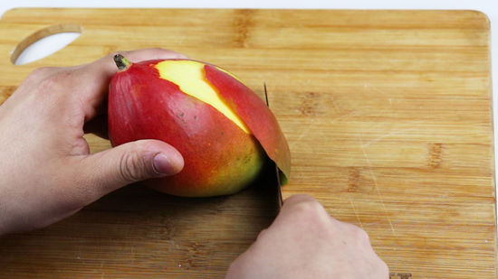
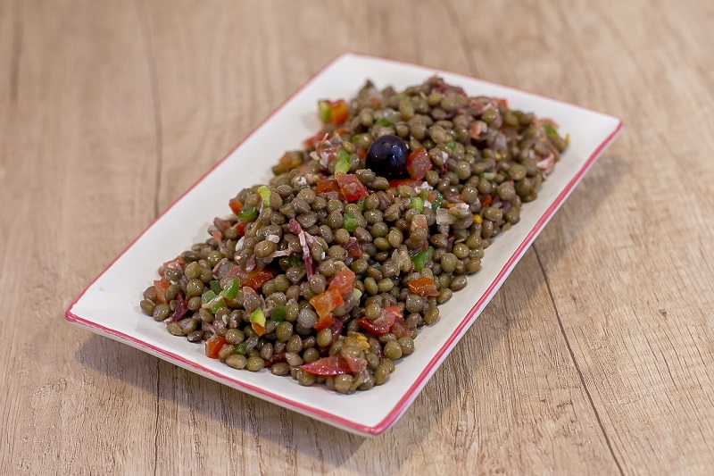

Posa les llenties en un colador, renta-les sota l’aigua de l’aixeta i deixa-les escórrer. Talla el pernil serrà en encenalls.
Pela el mango i la papaia i extreu-ne el pinyol central i les llavors, respectivament, de l'interior. Pela la pinya i treu-ne el centre fibrós. Talla les fruites a daus. Renta les fulles de menta i pica-les.
Prepara una vinagreta amb el suc de mig llimó, l’oli d’oliva, les fulles de menta picades i una mica de sal.
Col·loca les llenties en una ensaladera i afegeix-hi els daus de fruites tropicals i els encenalls de pernil. Amaneix amb la vinagreta de menta i llimó. Reserva-ho a la nevera fins al moment de servir.
